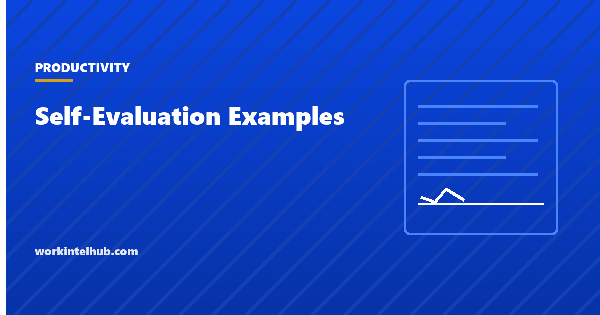

Self-Evaluation Examples

A self-evaluation is the part of the performance review the employee writes: what was achieved against what was expected, with evidence, and what comes next. It is read by a manager who has thirty of them and a calibration meeting in the morning, which is the context every example below is written for.
The examples are grouped by competency and every one contains a number, a date or a name. Use the builder to write yours in the same shape, then read the section on what managers do with these, because it changes what is worth writing.
Examples and builder
Write your own in the same shape
Tick examples below to see the shape, then replace them with your own. The examples are deliberately specific; the numbers are the point, and the ones that mention a shortfall are there because a self-evaluation with no shortfall is not believed.
Impact and ownership
Collaboration
Communication
Productivity and time management
Problem solving
Leadership
Growth and development
Goals against last review
The shape every good statement has
Three parts, in this order: what you did, the evidence, the result. Optionally, what is next. "I rebuilt the weekly status report around three questions; leadership stopped requesting follow-up calls from May" has all three in one sentence. "I improved communication with leadership" has none of them and will be skipped.
- Past tense, first person, one thing. Not "we", not "responsible for", not a list of duties. Duties are the job description; the evaluation is what happened.
- A number wherever one exists. Percentages, counts, days, dollars. Where none exists, a name: the client retained, the project shipped, the person promoted.
- The result, not the effort. "Worked hard on the migration" is effort. "Migration delivered two weeks early with no customer-reported interruption" is the result.
- One genuine shortfall, with what changed. A self-evaluation with no shortfall is read as either unaware or unwilling, and the manager supplies one. Supplying your own, with the fix already in place, keeps the framing yours.
What managers do with it
Three things, and knowing them changes what to write.
They check it against what they remember. Claims that match the manager's own observation are accepted; claims that do not are questioned; claims about work the manager never saw are the ones that need the most evidence, because the evaluation is the only place that work appears.
They lift lines from it into the review. A specific, well-written statement often ends up in the manager's write-up almost verbatim, which is why the numbers matter: they survive the copy. The performance review template shows the document your lines end up in.
They take it to calibration. When managers compare ratings across teams, the evaluation with dated, countable achievements is easier to defend than the one with adjectives. Your manager is your advocate in that room, and you are writing their briefing notes.
What to leave out
- Adjectives about yourself. Dedicated, passionate, detail-oriented. They are unfalsifiable and they are what every other evaluation says.
- The job description. "Managed client accounts and prepared reports" describes the role, not the year.
- Complaints about colleagues. A shortfall caused by someone else belongs in a one-on-one, not a document that goes on file. Our one-on-one template has the questions for that conversation.
- Anything new. A review should contain nothing the manager has not heard before, in either direction. If your biggest achievement is a surprise to your manager, the problem is the one-on-ones, not the evaluation.
- A rating higher than you can evidence. Where the form asks for a self-rating, rate to the evidence you wrote. Managers discount inflated self-ratings and remember them.
Writing one in a difficult year
A year with missed goals, a reorganisation or a period of leave still needs an evaluation, and the same shape works. State the goal and the result plainly, including "not achieved". Give the reason in one clause without excusing it, say what was done instead, and say what changes. "Goal: complete the certification. Result: not achieved; two of four modules done during a quarter that included the outage response. Remaining modules booked for Q1." That is a stronger paragraph than most people's successes, because it shows the writer can be trusted with bad news.
If the year included a formal performance improvement plan, the evaluation should reference it directly, state whether the plan's standard was met, and move on. Omitting it does not make the manager forget it.
Key takeaways
- Every statement: what you did, the evidence, the result. Past tense, first person, one thing, with a number or a name.
- Include one genuine shortfall with the fix already in place. An evaluation with none is not believed.
- Managers check claims against memory, lift good lines into the review, and defend ratings in calibration. Write for all three.
- Leave out adjectives, the job description, complaints about colleagues, and anything the manager has not heard before.
- Rate yourself to the evidence you wrote. Inflated self-ratings are discounted and remembered.
- In a bad year, state the miss plainly, give the reason in one clause, say what was done instead and what changes.
Frequently asked questions
How do I write a self-evaluation for a performance review?
Write a short statement for each competency or goal in three parts: what you did, the evidence, and the result, in past tense and first person with a number or a name in each. Add one genuine shortfall with what you changed, rate yourself to the evidence, and keep the whole thing to a page. The builder above produces statements in that shape.
What should I say in a self-evaluation?
Specific achievements against the goals set at the last review, with numbers, dates and names; one area where you fell short and what you did about it; and what you want next. Leave out adjectives about yourself and descriptions of your normal duties.
Should I mention weaknesses in a self-evaluation?
Yes, one or two, chosen by you and paired with what has already changed. An evaluation with no shortfall is read as unaware, and the manager will supply one. Naming your own keeps the framing yours.
How long should a self-evaluation be?
About a page: one or two statements per competency or goal. Managers read dozens and will not read a third page. Density of evidence matters more than length.
What is a good self-evaluation example?
One with a number in it: 'I automated the weekly data pull, which took two hours by hand; it now runs unattended, freeing about 90 hours a year.' The weak version of the same achievement is 'I improved efficiency in reporting.'
How do I rate myself on a self-evaluation?
To the evidence you have written. If the statements support exceeding expectations, say so; if they support meeting them, say that. Managers compare self-ratings with their own and with calibration across the team, and a rating the evidence does not carry costs credibility on the parts that were true.